Activity 7:
An infinite sequence of rational numbers between any two numbers[KK1]
Pat says: There are an infinite number of rational numbers between any two rational numbers. Is Pat right?
Train a robot named Box to Number that takes boxes like
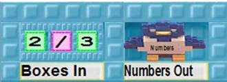
and gives a bird the number made by dividing the first number by the second. Use the pictorial instructions if you get stuck.
The result will look like
or[KK2]
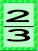
depending upon whether the numbers came from the Numbers notebook or Tooly.
Connect the Box to Number robot to the All Fractions team and watch the numbers given to the bird.
Are there any simplified fractions that appear in the sequence more than once?
Why or why not?
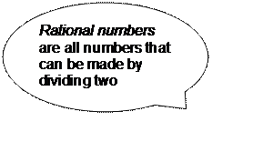
Task B: Produce the rational numbers from 0 to 2|
Use the Doubler robot from Activity 1 and the robots from Activity 4. Combine them so each fraction from 0 to 1 is doubled. |
|
Are there any numbers greater than 2 in the sequence?
Explain…
Are there any negative numbers in the sequence?
Explain…
Joe says, “Some rational numbers between 0 and 2 are missing from your sequence because by doubling the numbers you are thinning them out.”
Is he right?
If so, can you produce an example of a missing number?
Explain…
Suppose you had a nest that was receiving all the rational numbers between 0 and 2. It has no duplicates. If you used a robot that halved each number would the resulting sequence have any duplicates?
Explain…
Train a ThousandFold robot that multiplies a number by 1000.
Redo Task A except use ThousandFold instead of Doubler.
What sequence do you get?
Explain…
Predict. What sequence would you get if you multiplied by 0.5 instead?
Test. Try it.
Explain.
Generalize. What sequence would you get if you multiplied by other numbers less than 1?
Generalize. What sequence would you get if you multiplied by numbers greater than 1?
Train a robot called Add 10 that adds 10 to each incoming number before sending it out. Feed it all the rational numbers between 0 and 1.
Describe the resulting sequence.
Predict. What sequence would you get if you added -0.5 instead?
Test. Try it.
Explain.
Generalize. What sequence would you get if you replaced -0.5 with other numbers?
Train a robot named Interval to produce all the rational numbers between A and B when given the box
If, for example, 0.6 arrives on the nest, Interval subtracts A from B and multiplies the result (0.5 in this example) with the incoming number (0.6 in this example). Interval then adds the result and A and gives the result (5.3 in this example) to the bird.
If you need help with Interval use the pictorial instructions.
Start up robots to deliver all the rational numbers between 0 and 1 to the nest of Interval’s box.
Will the bird in the Rationals hole ever be given a number less than 5?
Will it ever be given a number greater than 5.5?
Are there any numbers between 5 an 5.5 that will not be given to the bird?
Explain…
Try Interval with other values for A and B.
Write a Web Report answering these questions:
1. Is there always a number between any two rational numbers?
2. How many numbers are there between any two rational numbers?
3. Are the rational numbers countable?
4. Are all the rational numbers between 0 and 1/1000000 countable?
5. Could all the rational numbers “dance” with all the rational numbers between 0 and 1/1000000?
Read the other Web Reports that answer these questions. If you find reports that give answers different from your report, then add comments to their report.[KK3]
Activity 7, Task A: Training Box to Number
|
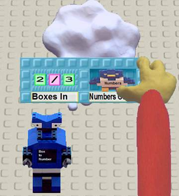 |
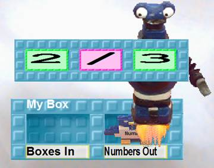 |
|
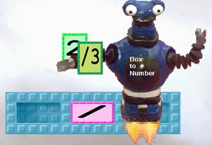 |
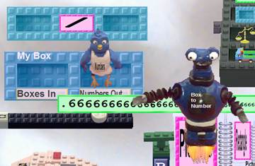 |
Activity 7, Task D: Training Interval
|
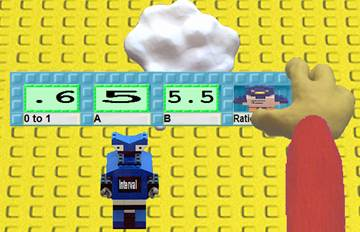 |
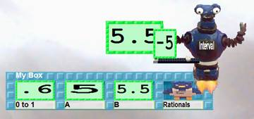 |
|
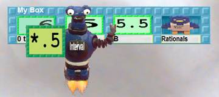 |
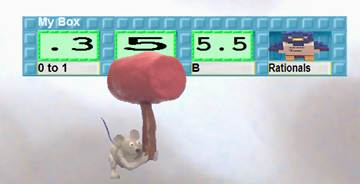 |
|
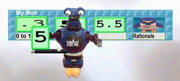 |
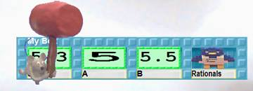 |
|
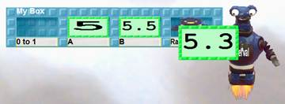 |
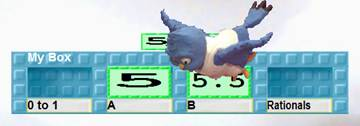 |
[KK1]This activity is really about the density of rational numbers and not about cardinality per se. Can be skipped if pressed for time.
[KK2]The children can use the presentation style for numbers that they prefer. The fractional one is probably the simpler one.
[KK3]If the answers to 3 and 4 are yes (which they should be since they have generated such sequences) then 5 should also be yes. One way to think about it is that if every element in A is dancing with a natural number and every element in B is also dancing with a natural number then each natural number can introduce its partners and then leave.
The rational numbers are dense unlike the integers. A set is dense if there is an element between any two elements.